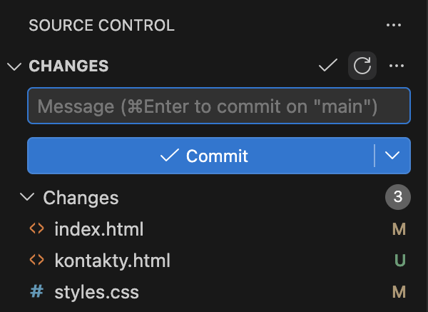
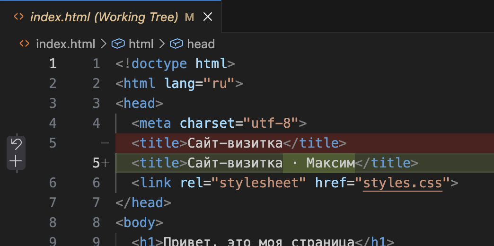
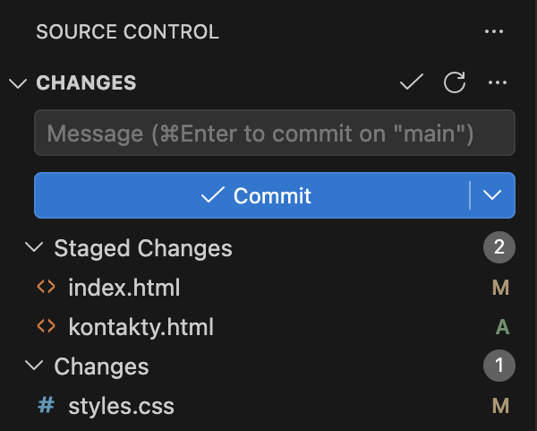
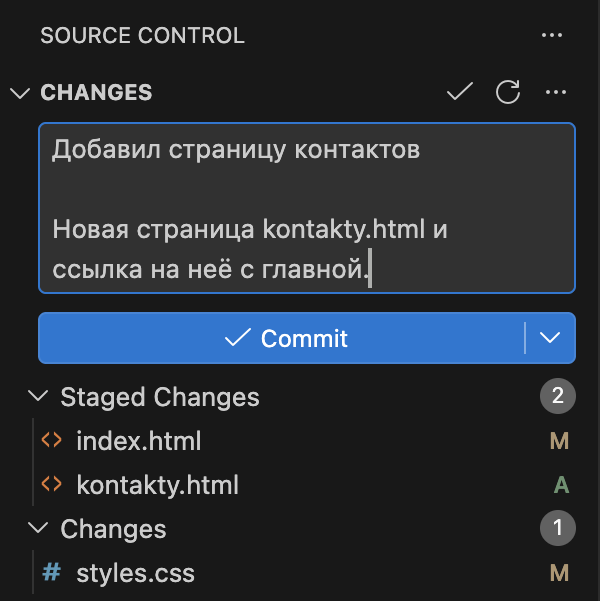
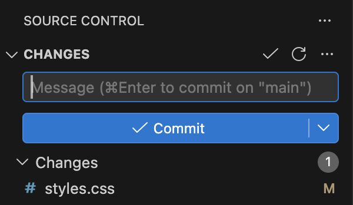
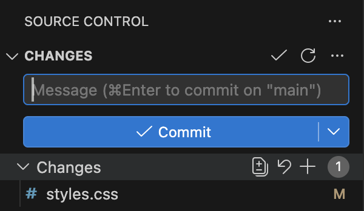
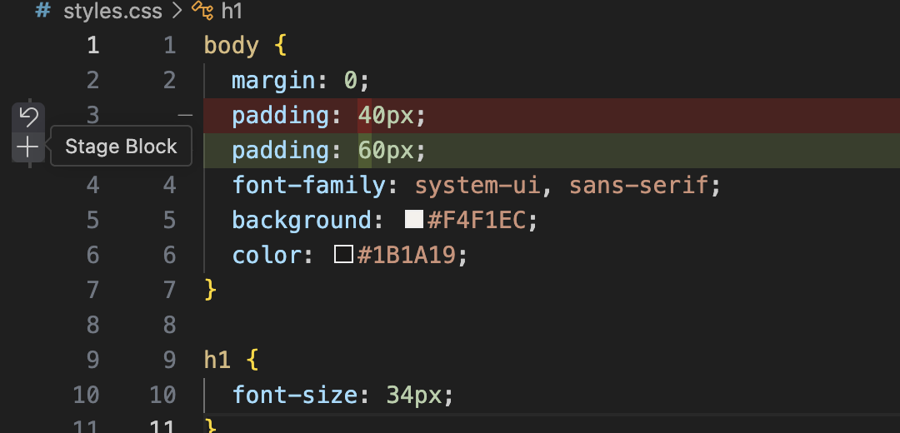
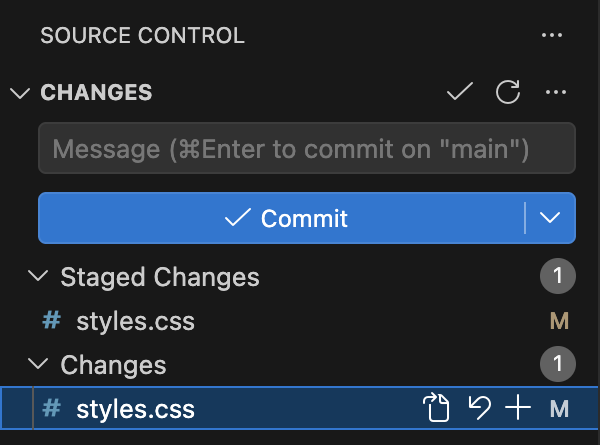

Справочник по Git и GitHub · модуль 2 · первый репозиторий в VS Code
Глава 2.3
Изменения, индекс, коммит:
почему два шага
В прошлых главах плюс нажимали сразу перед коммитом, и казалось, что это лишняя кнопка. В этой главе видно, зачем она: за полчаса работы в проекте накапливаются правки о разном, а в историю они должны уйти по отдельности. Разбираем накопленные правки и раскладываем их на два осмысленных коммита.
- Категория
- Основы работы
- Уровень
- Начальный
- Что получится
- Два коммита с понятными сообщениями вместо одной общей свалки
- Сколько занимает
- Около двадцати пяти минут за компьютером
§1Три места, где живут ваши правки
Между текстом в редакторе и записью в истории правка проходит через три места. У каждого своё название, и путаница между ними — причина почти всех вопросов новичков.
Индекс — среднее место, куда складывают то, что войдёт в следующий коммит. В панели VS Code он называется Staged Changes, в командах Git — index или staging area. Это черновик: пока коммит не сделан, содержимое индекса можно менять сколько угодно.
Зачем это нужно в работе
- Один коммит — одна законченная мысль. За час правится и вёрстка, и текст, и настройки. Если свалить всё в один коммит, потом невозможно откатить только одно.
- Черновик не мешает готовому. Незаконченный кусок остаётся в работе, а готовый уходит в историю: не нужно ждать, пока всё будет доделано.
- Проверка перед отправкой. Индекс показывает ровно то, что уйдёт в коммит. Это последняя точка, где видно случайный файл с паролем или отладочную строку.
- Понятная история для команды. По списку коммитов коллеги читают, что происходило с проектом. «Правки» и «фиксы» не говорят ничего, а «Добавил страницу контактов» — говорит.
§2Готовим площадку: правки в трёх файлах
Работаем на проекте sait-vizitka, который склонировали в главе 2.2. Если его нет, склонируйте заново — адрес там же.
Что делаем. Вносим четыре правки в трёх файлах — как будто это полчаса обычной работы. Правки про разное, и это здесь главное.
- В
index.htmlменяем заголовок вкладки:<title>Сайт-визитка · Максим</title>. - Там же, ниже абзаца, добавляем ссылку:
<p><a href="kontakty.html">Контакты</a></p>. - Создаём файл
kontakty.html— копию главной страницы с заголовком «Контакты» и строкой с почтой. - В
styles.cssувеличиваем отступ:padding: 60px;вместо40px.
Сохраняем всё (CtrlCmd + S в каждом файле) и открываем панель Source Control.
§3Шаг 1. Посмотреть, что накопилось
Что видно. В разделе Changes три файла — ровно те, которые мы трогали:

kontakty.html.То же самое словами Git — команда git status печатает подробнее, но об одном и том же:
M index.html ?? kontakty.html M styles.css
Что важно. Все три файла лежат в одном списке, и пока ни один из них в коммит не попадёт. Кнопка Commit сейчас нажалась бы вхолостую: индекс пуст.
Посмотрим, что именно изменилось в index.html — нажимаем на его имя:

§4Шаг 2. Разложить правки по смыслу
Три файла — но сколько здесь законченных дел? Считаем не файлы, а смысл:
| Что сделано | Какие файлы затронуты | Это одно дело? |
|---|---|---|
| Появилась страница контактов и ссылка на неё | kontakty.html — новый, index.html — ссылка | Да: без ссылки страницу никто не найдёт, без страницы ссылка ведёт в никуда |
| Заголовок вкладки стал понятнее | index.html | Отдельное мелкое дело, но лежит в том же файле |
| Увеличены отступы | styles.css | Да, это оформление — к контактам отношения не имеет |
Получается два коммита: первый — страница контактов со ссылкой, второй — оформление. Заголовок вкладки поедет вместе с первым: он в том же файле, и разделять его отдельно ради одной строки смысла нет.
Ассоциация: две коробки для переезда
Вещи со стола не сваливают в одну коробку. Посуду — в одну, книги — в другую, и каждую подписывают. Потом на новом месте не придётся перерывать всё, чтобы найти чашку.
Плюс у файла кладёт его в коробку — индекс. Commit заклеивает и подписывает её. Следующая правка пойдёт в новую коробку со своей подписью.
Где не совпадаетКоробок одновременно одна: пока не заклеили первую, вторую собирать нельзя. Поэтому коммиты делают по очереди, а не параллельно.
§5Шаг 3. Отобрать первую пару файлов
Что делаем. Наводим курсор на index.html, нажимаем +. То же самое для kontakty.html. Файл styles.css не трогаем — он поедет вторым коммитом.

index.html и kontakty.html. В Changes остался styles.css — он подождёт.Почему буквы разные. У index.html осталась M: файл был в истории и изменён. У kontakty.html буква сменилась с U на A — новый файл теперь отобран, Git начнёт за ним следить.
Проверить отбор можно и командой: git diff --staged показывает построчно, что лежит в индексе, а git diff — что осталось за его пределами. Два разных ответа на вопрос «что изменилось».
§6Шаг 4. Написать сообщение из двух частей
Что делаем. Щёлкаем в поле Message и пишем первую строку — коротко, о деле. Затем Shift + Enter дважды и пишем пояснение обычным предложением.

Просто Enter в этом поле переводит строку, а CtrlCmd + Enter сразу делает коммит. Привычка нажимать Shift + Enter избавляет от случайных коммитов с половиной сообщения.
§7Шаг 5. Сделать первый коммит и проверить его
Что делаем. Нажимаем ✓ Commit. Два подготовленных файла уходят в историю, styles.css остаётся на месте.

styles.css: он в коммит не входил.Что записалось. Посмотреть последний коммит целиком — вместе с автором, датой, сообщением и списком файлов — можно одной командой:
commit 3e4a2c6cec5fd5501bfbcf9d14b11dd308d49cb4
Author: Student <student@example.com>
Date: Wed Sep 23 05:45:56 2026 +0300
Добавил страницу контактов
Новая страница kontakty.html и ссылка на неё с главной.
index.html | 3 ++-
kontakty.html | 12 ++++++++++++
2 files changed, 14 insertions(+), 1 deletion(-)
В коммите сохранилось всё, что понадобится потом: длинное имя (хеш), кто сделал, когда, зачем, какие файлы затронуты и сколько строк добавлено и убрано. Имя автора и почта берутся из настроек, которые задавали при установке в главе 1.3, — вот где они пригождаются.
§8Шаг 6. Второй коммит из остатка
Что делаем. В разделе Changes остался один файл. Наводим курсор на заголовок раздела — у него свои значки:

Stage All Changes: отбирает сразу все файлы списка. Удобно, когда в списке только то, что нужно.Нажимаем плюс у заголовка, пишем сообщение «Увеличил отступы страницы» и делаем коммит. В истории проекта теперь два коммита вместо одного общего — и каждый описывает своё дело.
9e3c858 Увеличил отступы страницы 3e4a2c6 Добавил страницу контактов 745f2e1 Добавил README с описанием проекта
Сравните с тем, что получилось бы при нажатии «отобрать всё и закоммитить одним махом»: одна строка «Правки по сайту», из которой через месяц не понять ничего.
§9Шаг 7. Подготовить часть файла
Бывает, что в одном файле лежат правки о разном: подправили отступ и заодно начали новый блок стилей. В коммит нужно только первое. Git умеет отбирать не файл целиком, а отдельный участок.
Что делаем. Открываем окно сравнения (клик по файлу в панели) и наводим курсор на изменённый участок. Слева, в поле с номерами строк, появляются два значка:

Что получилось. Нажали плюс — и один и тот же файл оказался сразу в двух списках:

Это и есть доказательство, что индекс — отдельное место, а не просто галочка у файла. Git подтверждает то же самое двумя буквами в строке состояния:
MM styles.css
Первая M — изменение в индексе, вторая — изменение в папке, которое туда не попало. После коммита первая буква исчезнет, а вторая останется ждать своей очереди.
Частичная подготовка — инструмент на случай, когда правки перемешались. Специально разносить каждую строку по коммитам не надо: проще с самого начала делать одно дело за раз и коммитить сразу, как оно закончено.
§10Справка: три зоны и команды
Одно и то же действие называется по-разному в панели и в командах. Таблица связывает названия:
| Действие | В панели VS Code | Команда | Что меняется |
|---|---|---|---|
| Посмотреть, что изменилось | Список Changes | git status | Ничего, только показывает |
| Отобрать файл в коммит | + у файла | git add имя-файла | Файл копируется в индекс |
| Отобрать всё | + у заголовка Changes | git add . | В индекс уходит весь список |
| Вернуть из индекса | − у файла в Staged | git restore --staged имя | Файл убирается из индекса, правки целы |
| Посмотреть, что в индексе | Список Staged Changes | git diff --staged | Ничего, только показывает |
| Записать в историю | ✓ Commit | git commit -m "текст" | Индекс становится новым коммитом |
Команды приведены, чтобы вы узнавали их в чужих инструкциях и на форумах. Набирать их не обязательно: кнопки делают ровно то же самое.
§11Как писать сообщения коммитов
Сообщение пишется не для Git, а для человека, который через месяц будет искать, где всё сломалось. Работающее правило: первая строка отвечает на вопрос «что изменилось в проекте».
Проверка сообщения перед коммитом
50–70 символов: она целиком видна в списках истории и на GitHub.git log --stat.§12Частые вопросы
§13Проверьте себя
В панели три файла в Changes и ноль в Staged Changes. Что произойдёт по нажатию Commit?
Ничего не запишется: индекс пуст, коммитить нечего. VS Code предложит сначала отобрать изменения — или, если согласиться, отберёт все файлы сам. Правильный порядок — сначала плюс у нужных файлов, потом сообщение, потом Commit.
Один и тот же файл оказался и в Staged Changes, и в Changes. Как это возможно?
В индекс отобрана часть правок файла — например, один участок кнопкой Stage Block, — а остальное осталось в рабочей папке. В коммит уйдёт только отобранное. Git показывает это двумя буквами: MM.
Вы отобрали файл в индекс, а потом передумали. Как вернуть, не потеряв правки?
Навести курсор на файл в Staged Changes и нажать − (Unstage Changes). Файл вернётся в Changes, текст останется прежним. Это не то же самое, что круговая стрелка: та стирает правки.
За утро вы поправили вёрстку шапки, исправили опечатку в тексте и добавили новую картинку. Сколько коммитов делать?
Три — по числу законченных дел. Так через месяц можно будет откатить, например, только вёрстку шапки, не трогая остальное. Если всё уйдёт одним коммитом, откат заберёт заодно и опечатку, и картинку.
Чем git diff отличается от git diff --staged?
Первая показывает правки, которые ещё не отобраны, — то, что лежит в Changes. Вторая показывает содержимое индекса, то есть Staged Changes: ровно то, что уйдёт в следующий коммит.
Почему в сообщении коммита первую строку делают короткой?
Её показывают списком: в панели истории, в выводе git log --oneline, на странице проекта на GitHub. Длинная строка обрезается, и смысл теряется. Подробности пишут ниже, после пустой строки.
§14Шпаргалка по главе
рабочая папка — Changes
индекс — Staged Changes
история — коммиты
+ у файла — один файл
+ у заголовка — все
Stage Block — участок
− у файла в Staged
правки при этом целы
короткая первая строка
Shift+Enter — перенос
пояснение после пустой строки
git status --short
git diff — не отобрано
git diff --staged — в индексе
git log -1 --stat
git log --oneline
Итог главы
Между папкой и историей есть третье место — индекс, он же Staged Changes. Кнопка с плюсом кладёт туда правки, кнопка Commit превращает содержимое индекса в новую версию проекта. Нужен этот шаг ради отбора: из трёх накопленных правок мы собрали два осмысленных коммита вместо одной свалки. Отбирать можно файл целиком, все файлы разом или отдельный участок внутри файла — тогда один файл оказывается в обоих списках сразу. Сообщение пишется человеку: короткая первая строка о том, что изменилось, пояснение — ниже. В следующей главе посмотрим на получившуюся историю: как её читать, искать нужный коммит и видеть, кто что менял.
- Кадры и ответы команд получены на клоне учебного проекта sait-vizitka в Git версии 2.51.1.
- Работа разделов Changes и Staged Changes, кнопка Stage Block — документация VS Code, раздел Source Control.
- Назначение индекса и команд
git add,git restore,git commit— документация git-add и git-commit.